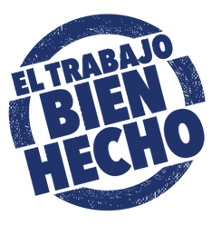
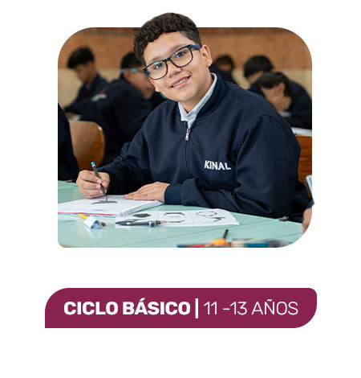
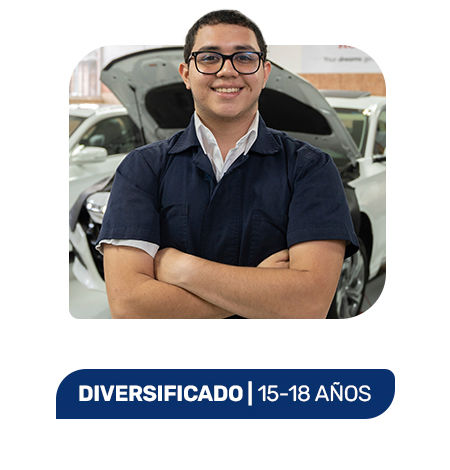
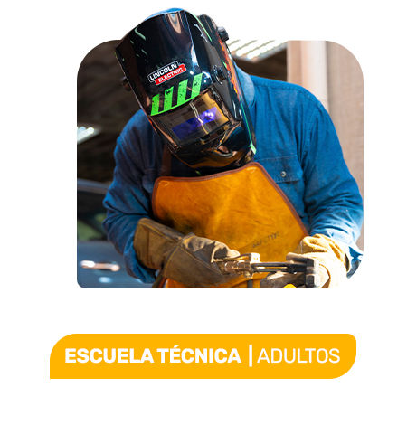
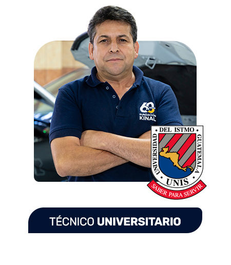
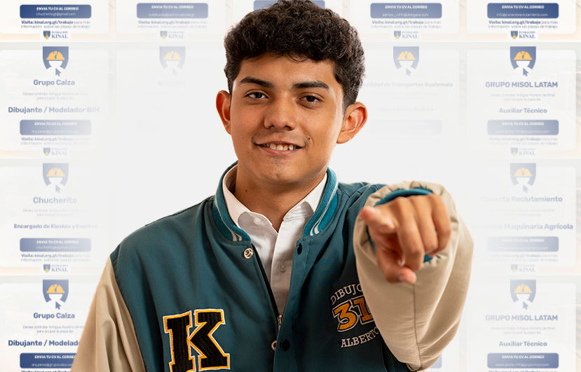
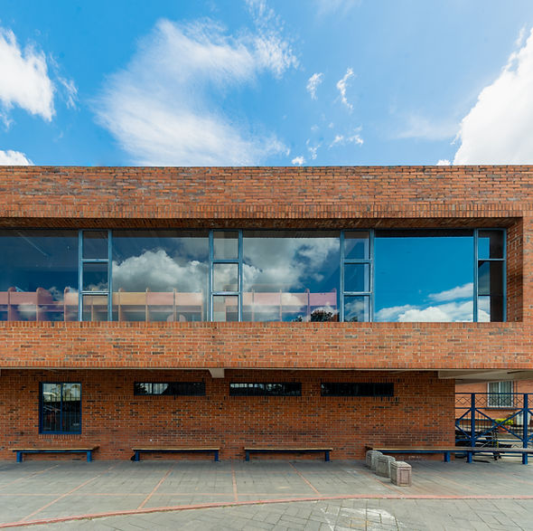

Kinal es un Centro Educativo privado, no lucrativo, dirigido a la formación técnica profesional de jóvenes y adultos, de beneficio colectivo y asistencia social en favor de los sectores más necesitados de la comunidad. Nuestro valor fundamental es enseñar a realizar el trabajo bien hecho, que sea la base de la superación de alumnos y el medio para servir a los demás.

Kinal ofrece su programa de Educación General Básica para todos aquellos jóvenes que buscan una orientación técnica y excelencia académica.
CONOCE MÁS
Durante 3 años se prepara al joven de forma técnica y académica, el egresado estará listo para trabajar en el ramo técnico de la especialidad que eligió estudiar: el título obtenido le permitirá ingresar a la universidad.
CONOCE MÁS
Contamos con más de 30 especialidades técnicas y tecnológicas que pueden favorecer tu crecimiento y/o tu inserción laboral.
CONOCE MÁS
Dirigido al fortalecimiento de mandos medios y especialmente aquellos que han cursado una carrera técnica y desean continuar con estudios a nivel universitario. Estos estudios son avalados por la Universidad del Istmo.
CONOCE MÁSESCUELA TÉCNICA
CICLO BÁSICO
DIVERSIFICADO
TOTAL

Durante 2023 recibimos más de 600 solicitudes de trabajo para nuestros antiguos alumnos.
💛 TRABAJOS
Cada donación que haces ayuda a la educación de un joven guatemalteco de escasos recursos a tener una educación de calidad.
💛 APÓYANOSA través de una reorganización visual y estructural del sitio, se buscó mejorar la claridad del contenido, la jerarquía de la información y la experiencia de navegación. Los cambios que se presentan a continuación responden a aspectos específicos del diseño original y se explican de forma puntual en cada una de las secciones correspondientes.
En el rediseño se replanteó la estructura de la página con el objetivo de ordenar la información de manera más clara. A diferencia del sitio original, los contenidos se agrupan por secciones bien definidas, lo que permite al usuario identificar rápidamente la información principal sin necesidad de recorrer todo el sitio.
Se mantuvieron los colores institucionales y se unificó el uso tipográfico para evitar variaciones innecesarias. Esta decisión busca que el sitio tenga una identidad visual más consistente y profesional, reduciendo la sensación de desorden presente en el diseño anterior.
En el rediseño se priorizó el uso de imágenes con proporciones uniformes y mejor integración con el contenido. Esto evita distorsiones visuales y contribuye a una presentación más limpia, permitiendo que los elementos gráficos apoyen la información en lugar de distraer al usuario.
Cada sección fue diseñada para cumplir una función específica, evitando mezclar contenidos distintos en un mismo bloque. Esta separación facilita la lectura y comprensión del sitio, ya que el usuario puede identificar con claridad dónde inicia y termina cada tipo de información.
Las decisiones de diseño se tomaron considerando la facilidad de uso. Se mejoró la legibilidad del texto, el contraste de colores y la distribución de los elementos, con el fin de que el sitio sea más intuitivo y accesible para cualquier tipo de usuario.
El rediseño contempla la correcta visualización del sitio en diferentes tamaños de pantalla. A diferencia del diseño original, la nueva propuesta se adapta a dispositivos móviles y tablets, manteniendo la estructura y funcionalidad sin perder contenido.
La información más relevante se colocó en las primeras secciones del sitio, aplicando principios de jerarquía visual. Esto permite que el usuario comprenda el propósito del sitio desde el primer vistazo, sin necesidad de desplazarse excesivamente.
Los botones y enlaces fueron rediseñados para que sean fácilmente identificables. Se evitó el uso excesivo de elementos interactivos, priorizando acciones claras y necesarias, lo cual reduce la confusión y mejora la navegación.
El rediseño de la página se realizó con base en criterios de organización, usabilidad y coherencia visual. Cada cambio responde a una necesidad detectada en el diseño original y busca mejorar la experiencia del usuario final. La propuesta final demuestra la aplicación de principios de diseño web y justifica las decisiones tomadas desde un enfoque funcional y académico, evidenciando una mejora significativa en la estructura y presentación del sitio.